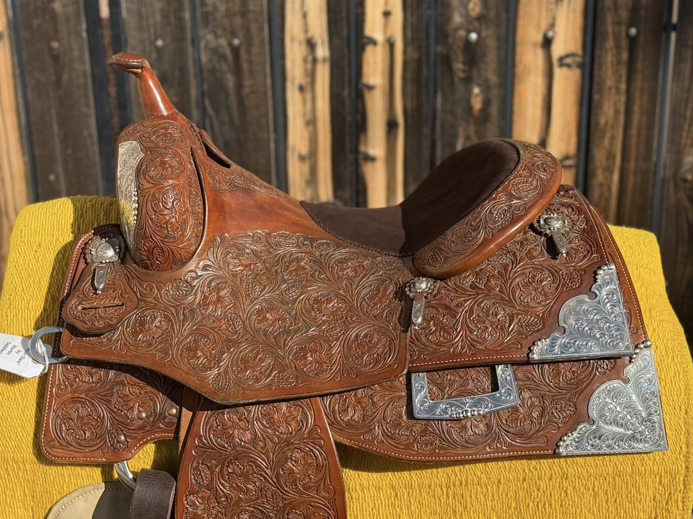
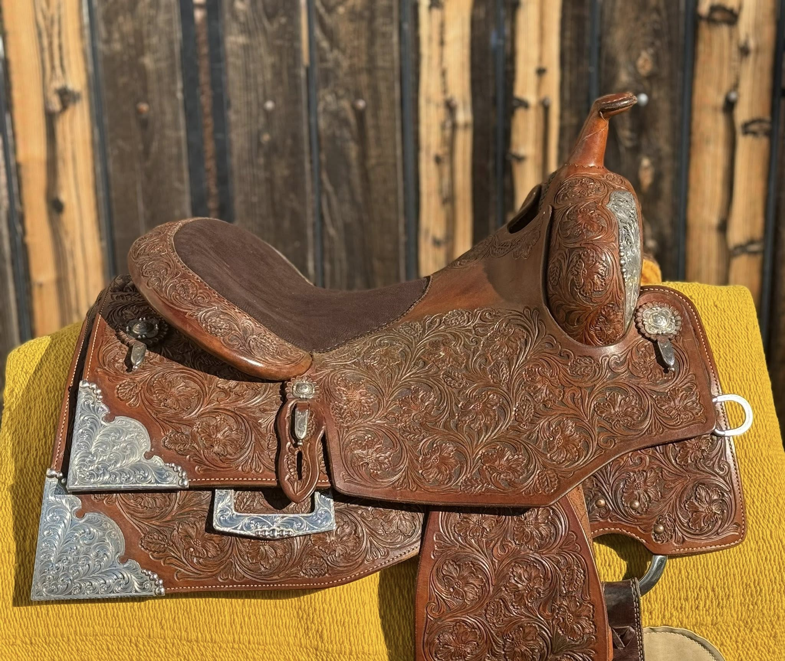
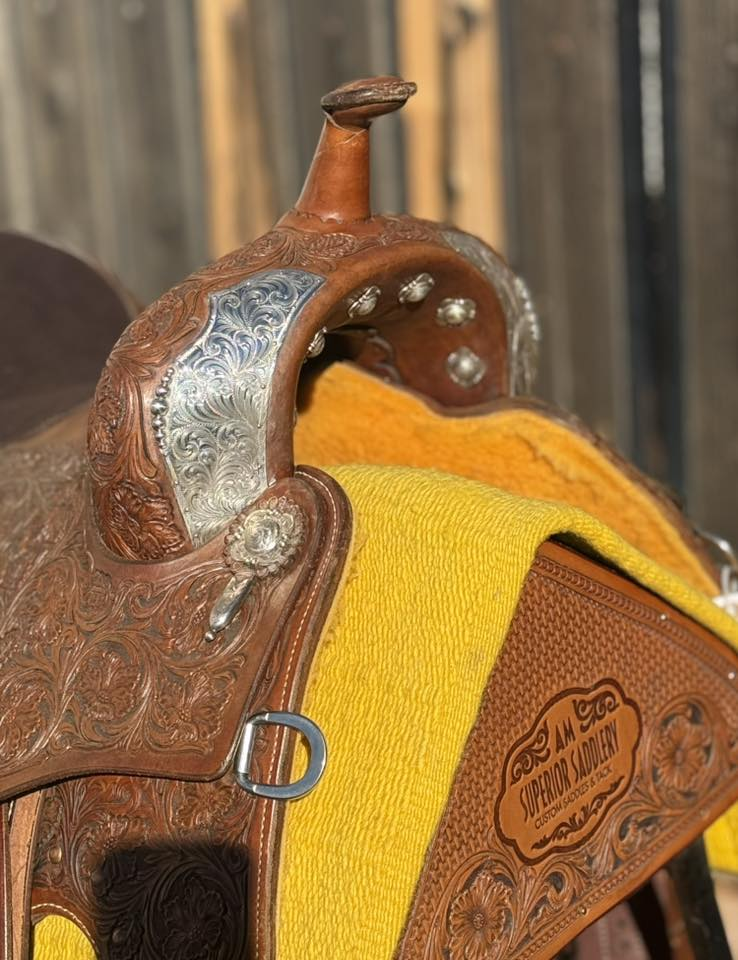
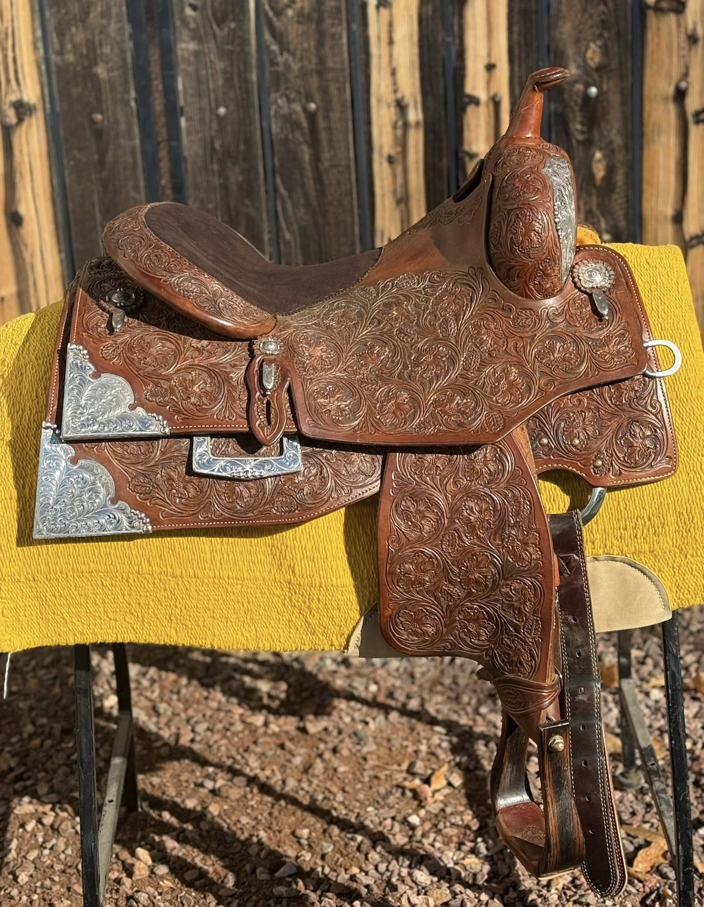
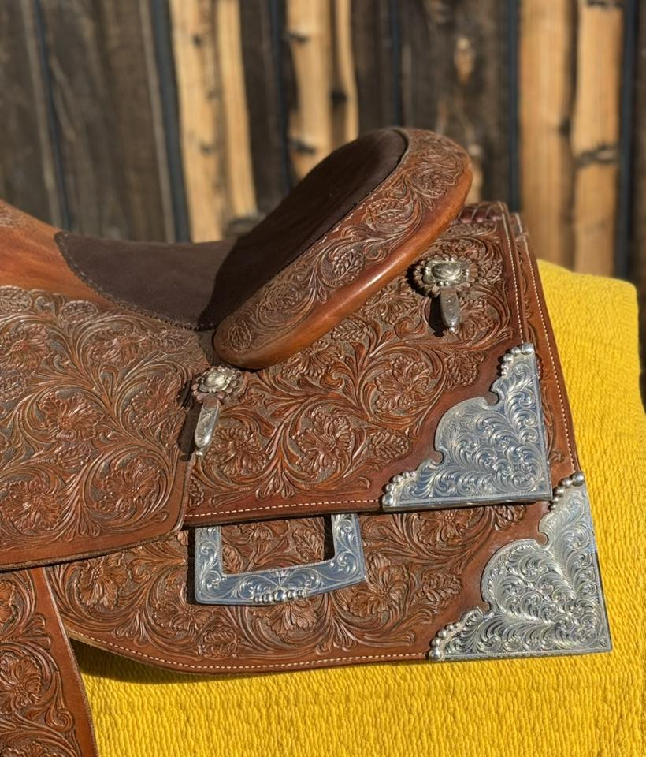
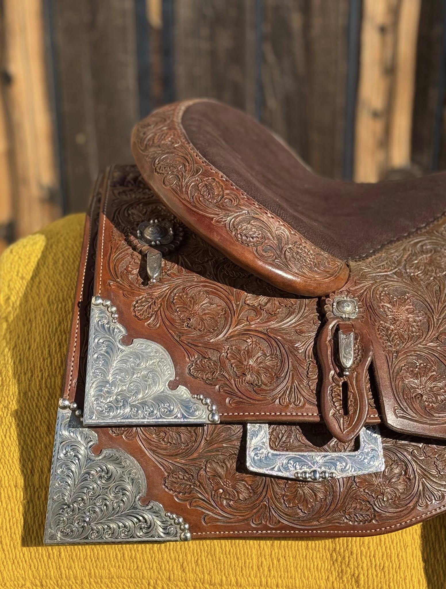
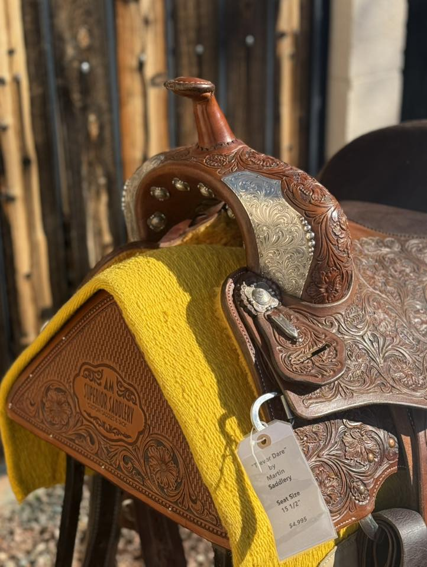

Trevor Dare Reiner by Martin Saddlery — 15½" Full Silver
| Maker | Martin Saddlery (AM Superior Saddlery) |
|---|---|
| Model | Trevor Dare Reiner |
| Seat Size | 15½" |
| Tree Width | Contact for fit details |
| Leather | Dark mahogany/chestnut |
| Tooling | Full floral — head to toe |
| Silver | Full swell overlay, massive corner plates, engraved skirt plates, cantle binding studs |
| Condition | Great |
The Trevor Dare Reiner by Martin Saddlery is a showcase piece. Full floral tooling covers every surface from swell to skirt, and the silver package is among the most substantial in the inventory — a full swell overlay with engraved scroll, massive engraved corner plates on both front and rear skirt sections, an engraved skirt plate and keeper, and silver cantle binding studs. The maker tag confirms "Trevor Dare" by Martin Saddlery at 15½" seat size.
The AM Superior Saddlery stamp is visible on the rear housing, confirming the pedigree. Condition is rated great throughout — the leather is clean and supple, the silver is bright, and the roughout suede seat shows light wear appropriate to a well-maintained competition saddle.